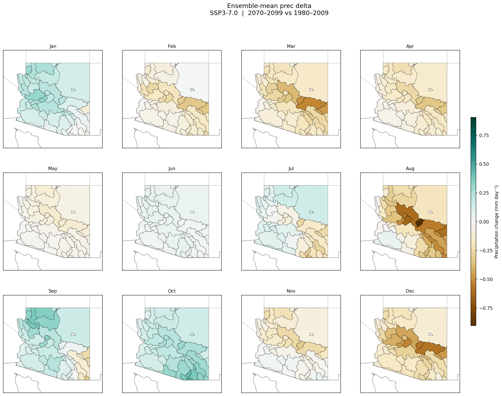
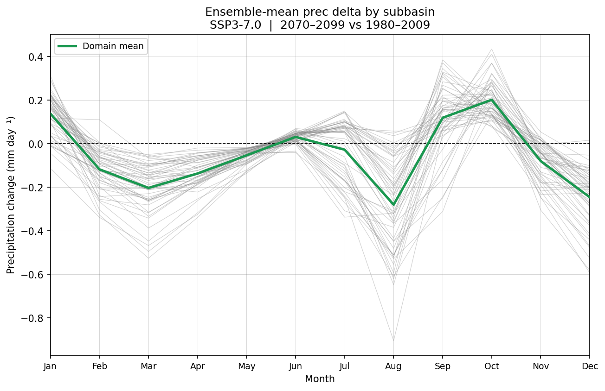
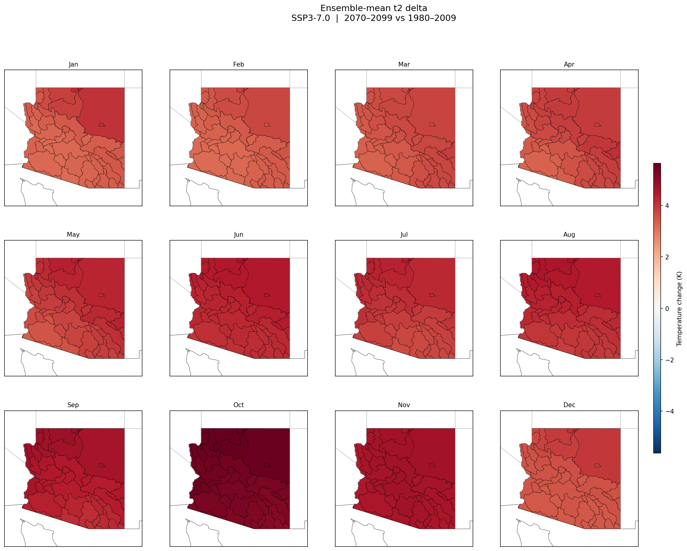
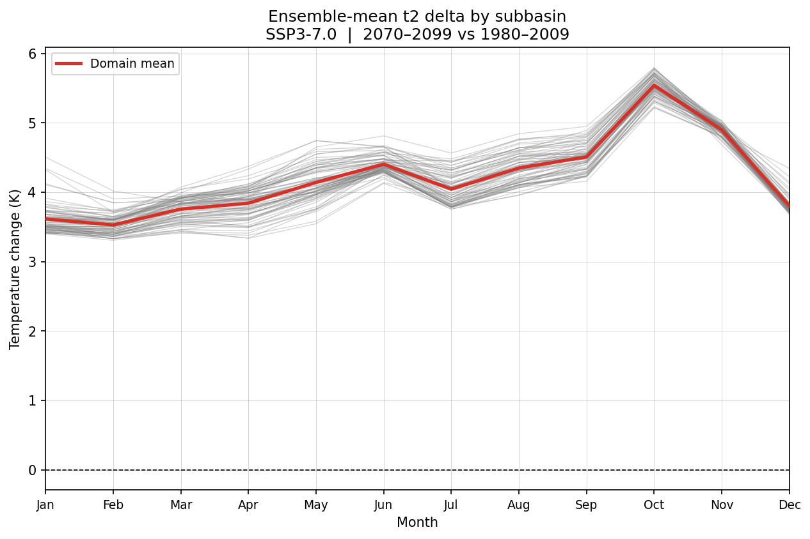

Mean, standard deviation, and 10th/90th percentile deltas across all GCMs, by subbasin and month.


| Subbasin ↕ | Month ↕ | Mean Δ % ↕ | Std ↕ | P10 ↕ | P90 ↕ | N GCMs ↕ |
|---|


| Subbasin ↕ | Month ↕ | Mean Δ K ↕ | Std ↕ | P10 ↕ | P90 ↕ | N GCMs ↕ |
|---|